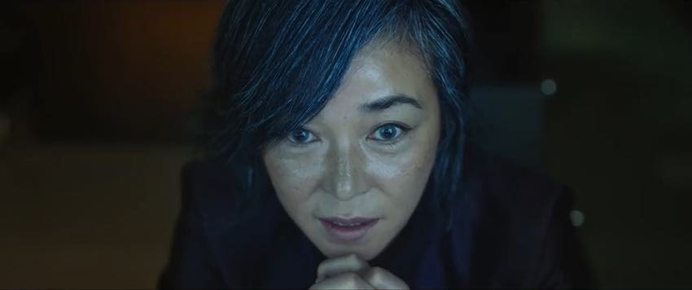

. A high school student who has a serious health condition and is being chased by suspicious people, she thinks they have mistaken her for someone else.This is a korean movie and is available on nectflix,for now only part 1 is released which is 2 hr long.It was released in June 27, 2018.
I like this movie because the plot twist was soething i never ever expected and the fighting scenes are very cool.I always rewatch it because the movie is way too cool.
| CAST | PICTURES |
|---|---|
| Kim Da-mi as Ja-yoon | Jo Min-su as Dr. Baek |  |
| Choi Woo-shik as Nobleman | |
| Go Min-si as Do Myung-hee | |
| Choi Jung-woo as Teacher Goo | |
| Oh Mi-hee as Teacher Goo's wife | |
| Jung Da-eun as Girl with long hair | |
| Kim Byeong-ok as Police Officer Do |